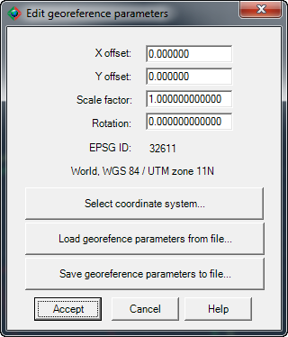
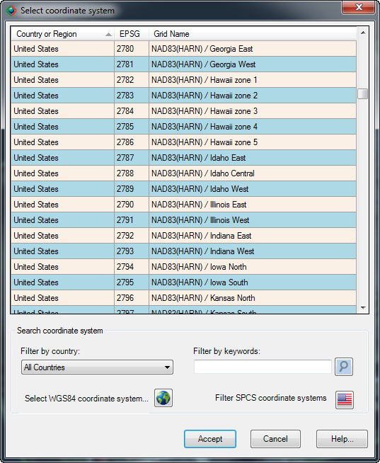

|
|
Toolbar:
Menu: CAD-Earth > Georeference drawing > Edit georeference parameters
|
|
|
Command line: CE_EDITGEOPARAMS
CAD-Earth version: Basic, Plus, Premium. |
.png)
.png)
.png)
Command description:
Use this command to inspect and modify the current drawing georeference parameter like translation (X and Y offset), scale and rotation values and EPSG number.

Dialog box to edit georeference parameters
ØX and Y offset. This values define the displacement in the horizontal and vertical direction. If the drawing coordinates correspond to the site UTM coordinates, this values will be close or equal to zero.
ØScale factor. The value of this parameter will be equal to 1 if each drawing unit is equal to 1 meter. If you use a measure system other than meters the value of the scale factor will be the conversion factor from the measure system to meters.
ØRotation. If the drawing was made in the corresponding UTM coordinates, the value of this parameter will be close to zero.
ØEPSG ID. This is the EPSG (European Petroleum User Group) identification number for the coordinate system used for conversion between drawing and latitude/longitude coordinates.
ØSelect coordinate system. A dialog box will be shown to select the coordinate system that corresponds with the place where the objects are physically located. You can filter coordinate systems by selecting the country from the list (see fig.). You can also filter coordinate systems based on the WGS84 datum or SPCS (State Plane Coordinate System) by selecting them in country list. If you start to type when the country list is displayed, the corresponding rows will be dynamically filtered. Double clicking on a row selects the corresponding coordinate system and closes the dialog box. You can sort rows by clicking on any column header.

Select coordinate system dialog box
ØLoad georeference parameters from file button. Select to import parameter values from an existing DGW text file.
ØSave georeference parameters to file button. Select to save parameter values to a DGW text file.
Tips.
•Although you can manually modify the georeference parameter values it is recommended that you use the georeference drawing commands or load them from a file to modify them.
•Once you press the accept button the georeference parameters will be saved in the current drawing and will be used by some CAD-Earth command to convert between drawing and latitude/longitude coordinates.
•Use the 'Show georeferenced objects' command to see drawing entities located in a map and make sure you have selected the right coordinate system before using some CAD-Earth commands.
Copyright © 2023 Arqcom Software
Google Earth© is a registered trademark of Google inc. All other trademarks are the property of their respective owners.